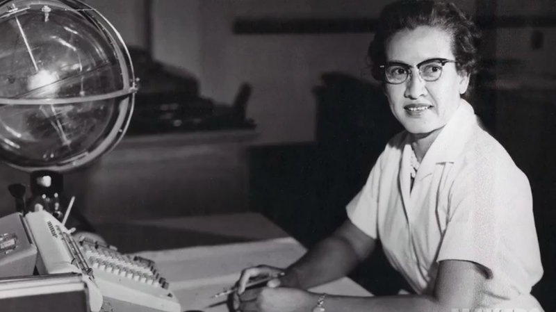
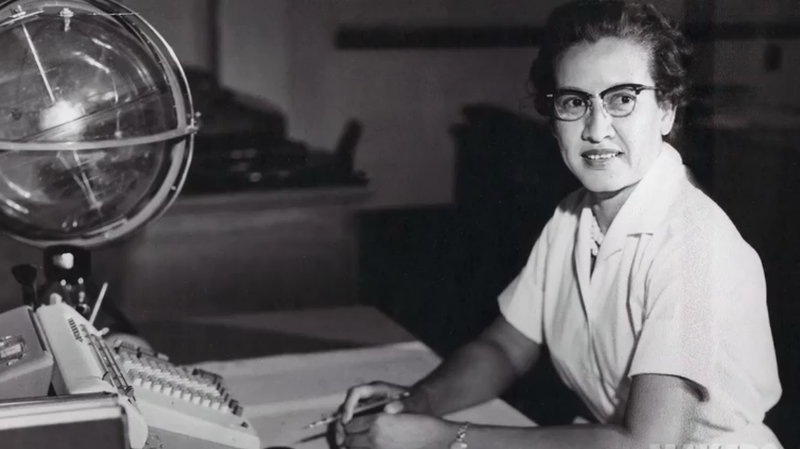

Being handpicked to be one of three black students to integrate West Virginia’s graduate schools is something that many people would consider one of their life’s most notable moments, but it’s just one of several breakthroughs that have marked Katherine Johnson’s long and remarkable life. Born in White Sulphur Springs, West Virginia, in 1918, her intense curiosity and brilliance with numbers vaulted her ahead several grades in school. By 13, she was attending the high school on the campus of historically black West Virginia State College. At 18, she enrolled in the college itself, where she made quick work of the school’s math curriculum and found a mentor in math professor W. W. Schieffelin Claytor, the third African American to earn a PhD in mathematics. She graduated with highest honors in 1937 and took a job teaching at a black public school in Virginia.